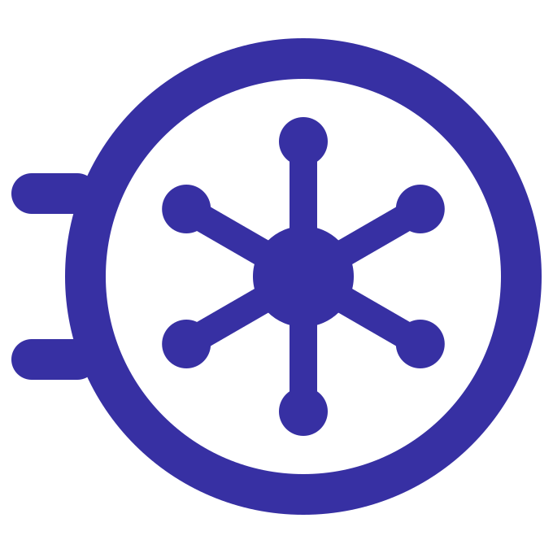

Design system
The visual version of DESIGN_SYSTEM.md, now in the Glassmorphism 2.0 style. The app's surfaces are frosted glass floating over a soft colored light we call the aurora. Every color, size and component here uses the app's real tokens. Use the switches to see light or dark mode, or what the app looks like with Windows transparency turned off.
§1 Principles
- Numbers come first
- Amounts are the largest, clearest thing on screen. The glass frames them and never competes with them.
- Glass is the material, color is the light
- Panels stay neutral and frosted. Color lives in the aurora behind them and in the meaning colors (income, expense, warnings), never on whole panels.
- Readability beats effect
- Text always sits on a frosted panel, never straight on the aurora. Every text color is checked at the worst spot, where a panel sits over the strongest color.
- One layer of blur
- A panel is blurred once. Rows, chips, fields and toolbars inside it are flat tints, never blurred again.
- Never rely on color alone
- Income and expense always also have a sign (+ / −) or an icon.
- Built for the keyboard
- Every action works without a mouse, with a visible focus ring.
§2 Glass and layers
The app has three levels. The aurora canvas is always at the back. Panels float on it, and raised elements float over the panels. Each level up is more opaque, more blurred and casts a deeper shadow.
Sidebar, top bar, toolbars and cards. Glass 62%, blur 22 px, bright 1 px edge, soft shadow.
Rules
--wash, --field)--glass-strong for dialogs, menus and toastsThe aurora
Four soft color lights sit in the corners of the window over a plain canvas, with a faint film grain on top. The aurora is painted by the app, not the Windows wallpaper, so contrast never depends on your desktop. It's fixed to the window: it doesn't scroll or move.
#FF8BD0 top-left · blue #7FA8FF top-right · mint #5EEAD4 bottom-right · peach #FDBA74 bottom-left · canvas #EEF1FA · grain 9%#7C3AED · blue #1D4ED8 · teal #0E7490 · magenta #BE185D · canvas #070815 · grain 7%When transparency is off
If Windows' "Transparency effects" setting is off, the app follows it: panels become solid (--glass-solid) and the blur turns off, but the aurora, shapes and colors stay. Settings → Appearance also gets a Reduce transparency switch for this app alone (Phase 4). Try the Transparency off switch at the top of this page.
Glass (normal)
Transparency off
§3 Color
Each token is shown in light mode (left) and dark mode (right), on glass over the aurora. The ratios are worst-case contrast: text on a 62% panel sitting over the strongest aurora color. WCAG AA needs 4.5 : 1 for text, and every text color passes. The lowest is 4.95 : 1, for expense red in light mode.
3.1 Glass surfaces
3.2 Text and accent
3.3 Meaning: money and status
--danger uses the same red as --expense. Each meaning color also has a tint for chips and banners: 16% in light mode, 20% in dark.
3.4 Category palette cat-1 … cat-12
Twelve new values, deeper in light mode and lighter in dark, so category icons stay clear on glass. As icons they need 3 : 1 contrast. The worst case is 3.7 : 1 in light mode and 6.4 : 1 in dark. Income and expense colors are numbered separately, so the 12 most common expense categories each have their own color. Each card lists the preset categories that use it.
3.5 Implementation (Tailwind 4)
/* src/styles/globals.css */
:root { --glass: rgb(255 255 255 / .62); --edge: rgb(255 255 255 / .8); --income: #03684A; /* … */ }
.dark { --glass: rgb(20 22 38 / .62); --edge: rgb(255 255 255 / .14); --income: #6EE7B7; /* … */ }
@utility glass { background: var(--glass); border: 1px solid var(--edge); backdrop-filter: blur(22px) saturate(170%); box-shadow: var(--shadow-panel); }
@utility glass-raised { background: var(--glass-strong); border: 1px solid var(--edge); backdrop-filter: blur(32px) saturate(180%); box-shadow: var(--shadow-raised); }
@media (prefers-reduced-transparency: reduce) {
.glass, .glass-raised { background: var(--glass-solid); backdrop-filter: none; }
}
§4 Typography
Sora, a clean geometric typeface, is bundled inside the app in weights 400, 600 and 700 (the app has no network access). I checked that it has fixed-width digits, so amounts line up in columns, and that it includes the ₱ sign. If it ever fails to load, the app falls back to Segoe UI Variable.
displayh1h2h3bodybody-strongsmallFixed-width digits line up
Sentence case everywhere
§5 Spacing, shape and depth
Spacing scale (4 px base)
Radius: rounder as things get bigger
chips
controls
toolbars
panels
dialogs
Depth: panel shadow vs raised shadow
Window layout: floating panels
The window is a fixed 1440 × 900, not resizable or maximizable, and it falls back to 1280 × 800 if the screen is too small. Every panel floats with a 12 px gap, including from the window edge. The content column is 1176 px wide, and it scrolls under the fixed top bar.
§6 Icons
lucide icons with a 1.75 stroke: 16 px inline and in buttons, 20 px in the sidebar, 24 px in empty states. Category icons sit in a 32 px chip with 10 px corners: a tint of the category color, a bright inner edge, and the icon in full color.
arrow-down-leftarrow-up-rightarrow-left-rightwalletlandmarksmartphonecredit-card6.1 Logo: Line Door
A bank-vault door in bold white lines on a rounded indigo tile, with the aurora's light glowing inside. It has a ring, two hinges, a six-spoke wheel and a solid hub. It stays readable down to 16 px.
App icon · logo.svg · 96, 48, 30, 24, 16 px

logo-mark-white.svg
logo-mark-indigo.svgKeep at least one eighth of the icon's width clear around it. Don't recolor the tile, rotate the door, or add text or ₱ inside it. The Windows icons are generated from app-icon-1024.png with tauri icon.
§7 Money and number formatting
Philippine peso, with the official sign ₱ (U+20B1) placed before the amount and 2 decimal places. All formatting goes through src/lib/money.ts. Expenses use a true minus sign (−), not a hyphen.
| Case | Shown as | Color token |
|---|---|---|
| Income in lists | +₱1,234.50 | --income |
| Expense in lists | −₱1,234.50 | --expense |
| Transfer in lists | ₱1,234.50 | --transfer |
| Balance, positive | ₱1,234.50 | --foreground |
| Balance, negative | −₱1,234.50 | --expense |
| Credit card | ₱1,234.50 owed | --foreground |
| Net cashflow | +₱500.00 −₱500.00 | --income / --expense |
| Zero | ₱0.00 | --muted-foreground |
| Chart axis | ₱12.5k · ₱1.2M | muted, small |
Percent change Phase 2
Amount input
§8 Date formatting
| Use | Example | Notes |
|---|---|---|
| Day group header | Today · Yesterday · Mon, Oct 26 | Adds the year when it isn't this year |
| Day period | Mon, Oct 26, 2026 | |
| Week period | Oct 26 – Nov 1, 2026 | Monday to Sunday |
| Month period | October 2026 · Sep 25 – Oct 24, 2026 | A range when the month start day is after the 1st |
| Year period | 2026 | Always the calendar year |
| Date input | 10/26/2026 | Stored as 2026-10-26 |
Decided: dates always use US order (10/26/2026, Oct 26), whatever the Windows region setting.
§9 Components
Built on shadcn/ui, restyled with the glass tokens. App-specific components live in src/components/. Hover and focus states are drawn statically so you can see them.
Buttons
Inputs
Combobox and date picker raised glass
Menus and the calendar are raised glass. Weeks start on Monday. ↑ / ↓ in the date field move one day. Typing filters the categories, and Enter picks one.
Period bar and segmented control
The period bar is its own small glass toolbar, so its label never sits on the bare aurora. The selected segment is solid indigo. "Today" is disabled because the current period is already selected.
Stat cards
Clickable cards lift 2 px on hover. Net cashflow is the one card tinted with the accent.
Rows: transactions and accounts
The first row is in its hover state: a lighter wash, with the edit and duplicate buttons.
Progress bars Phase 3
Banners and toasts
Dialog
Archive Old Wallet?
Old Wallet still has ₱45.00. Archived accounts still count toward your net balance.
Dialogs are raised glass with 24 px corners. The app behind them dims (--overlay) and gets a light 6 px blur. They fade in while growing from 98% to full size, in 180 ms.
Empty state and loading skeleton
§10–11 Motion, performance and writing
Motion
- 150–200 ms, ease-out.
- Clickable cards lift 2 px on hover. Buttons shrink to 97% while pressed.
- Dialogs fade in and grow from 98% to full size. The backdrop fades in with them.
- The aurora never moves, and numbers never count up.
- Windows' reduced-motion setting turns all of this off.
Performance
- Blur only on panels (22 px) and raised elements (32 px). Never on rows, chips or fields.
- About 12 or fewer blurred elements on screen at once.
- Scrolling lists scroll inside one blurred panel, so rows don't get re-blurred as they move.
- With transparency off, every panel turns solid and nothing is blurred.
Writing
§12 Open questions and decisions
None at the moment. Everything is decided.
Decided
- Style: Glassmorphism 2.0.
- Accent: deep indigo
#3730A3in light mode, periwinkle#A5B4FCin dark. - Currency: Philippine peso, shown as ₱, before the amount, with 2 decimal places.
- Font: Sora, bundled with the app.
- Dates: always US order, 10/26/2026.
- Category colors: numbered separately for income and expense.
- Reduce transparency: a switch in Settings → Appearance (SET-8, Phase 4).
- Window: fixed 1440 × 900, not resizable.
- Logo: C · Line Door (§6.1).